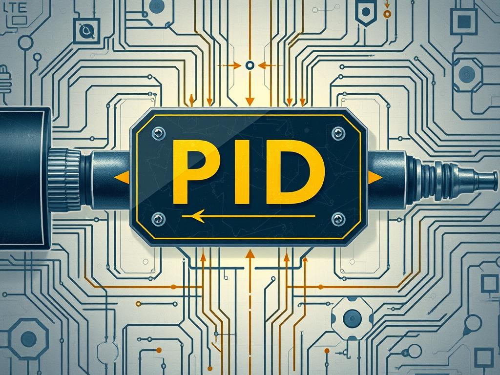
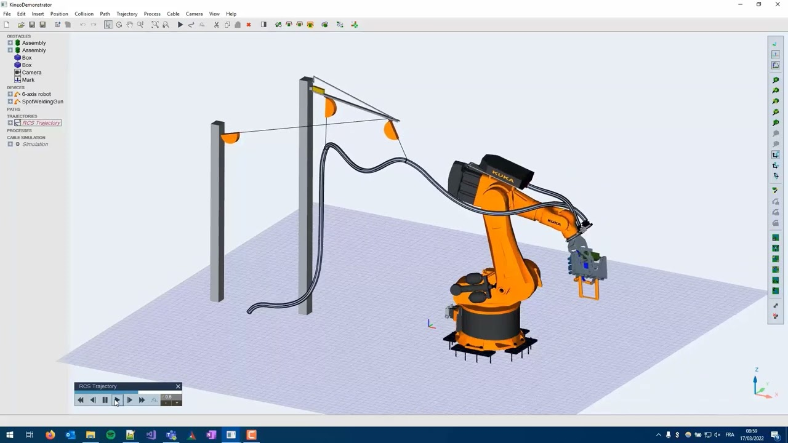
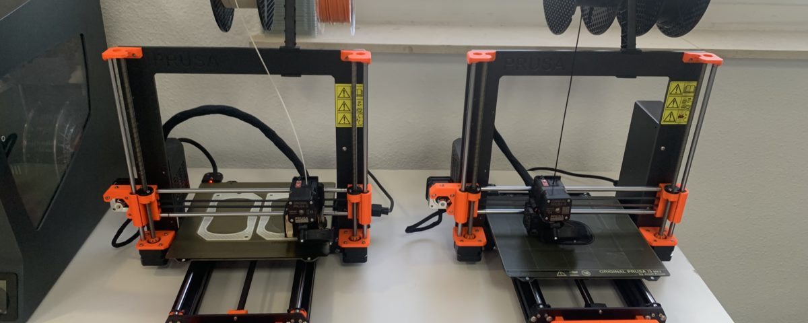
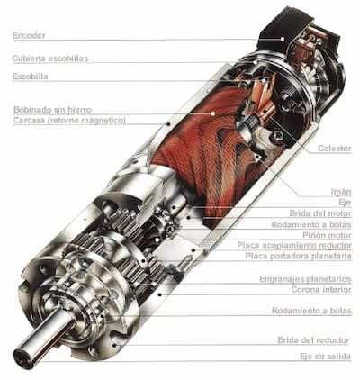
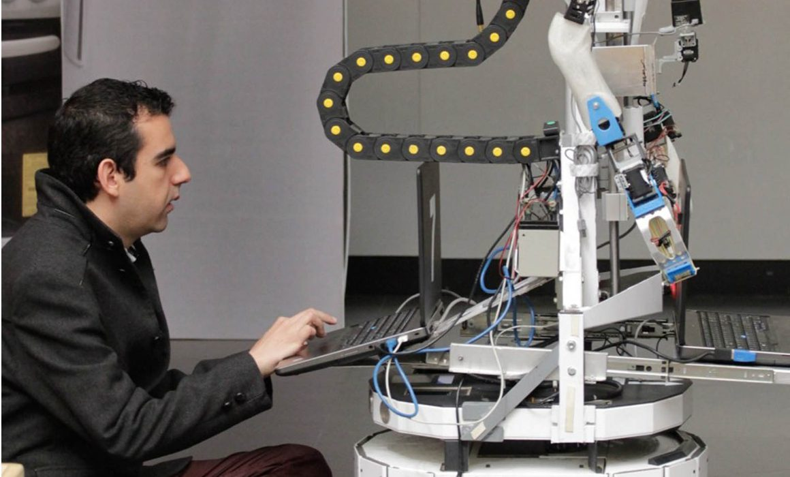
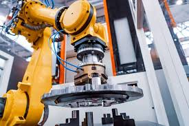
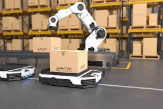
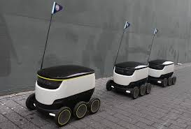
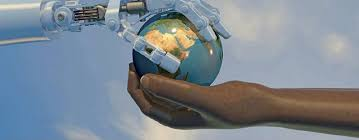
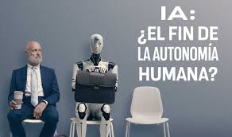

Introducción
1¿Que son los robots?
Los robots, son máquinas diseñadas para realizar tareas de manera autónoma o semiautónoma, estos están revolucionando diversos sectores. En la industria, se utilizan para mejorar la eficiencia en procesos como ensamblaje y soldadura. En el ámbito doméstico, los robots de servicio, como los de limpieza, facilitan las tareas cotidianas. Además, los robots médicos y autónomos están cambiando el panorama de la salud y el transporte. Con el avance de la robótica, el futuro promete nuevos desafíos y oportunidades en todos los aspectos de la vida.
2¿Que veremos en este articulo?
Vamos a ver en que nos puede afectar o beneficiar el desarrollo y aplicaion de los robots en lavida cotidiana de muchas personas, al igual en lo que pueden ser realmente utiles y si es que hay una posibilidadde que los robots reemplacen las personas en los trabajos profesionales y
Código y Software
Código y Software
El desarrollo de la robótica moderna ha sido posible gracias a la integración de sistemas de control avanzados, lenguajes de programación especializados y herramientas de software diseñadas para modelar, simular y ejecutar tareas complejas. En este contexto, el código y el software se convierten en los elementos fundamentales que permiten a los robots interactuar con su entorno, procesar información y tomar decisiones de manera autónoma o asistida.
Comprender cómo funcionan los algoritmos de control, qué lenguajes de programación son los más utilizados y qué software facilita la creación y prueba de robots, es esencial para cualquier profesional o estudiante interesado en esta disciplina. A través de este tema se analizarán los principales enfoques y recursos digitales que hacen posible el diseño funcional de sistemas robóticos, desde su concepción en entornos virtuales hasta su implementación práctica en el mundo físico.
Algoritmos de controlDiseño y Hardware
El diseño y hardware son pilares fundamentales en la construcción de robots, ya que determinan sus capacidades físicas, nivel de autonomía y adaptabilidad al entorno. Desde la estructura mecánica hasta los sensores y actuadores, cada componente debe ser cuidadosamente seleccionado y configurado para cumplir con las funciones asignadas. Además, la evolución de tecnologías como la impresión 3D ha ampliado las posibilidades en el diseño de prototipos robóticos funcionales, rápidos y rentables.
Impresoras 3DProyectos y Aplicaciones
Los robots han transformado múltiples áreas del mundo mediante proyectos y aplicaciones que van desde la industria hasta la educación, desempeñando un papel clave en la automatización y la mejora de la calidad de vida. Los robots autónomos se caracterizan por operar sin intervención humana constante, aplicándose en tareas como la exploración espacial, la agricultura de precisión o la limpieza automatizada, mientras que los robots educativos fomentan el aprendizaje de ciencia, tecnología y programación en niños y jóvenes, integrándose como herramientas interactivas en el aula. Por su parte, los robots de servicio apoyan en actividades cotidianas como el cuidado de personas mayores, la atención en hoteles o la entrega de productos, mostrando cómo la robótica puede humanizarse para satisfacer necesidades sociales. Finalmente, los robots industriales, fundamentales en fábricas y líneas de producción, han revolucionado procesos mediante su precisión y eficiencia, impulsando avances en sectores como la automotriz, la electrónica y la manufactura en general.
Robots industriales
Ética y Seguridad
La robótica plantea importantes desafíos éticos y de seguridad al integrarse cada vez más en la sociedad, ya que su uso influye en el empleo, la privacidad, la autonomía humana y las decisiones morales que antes solo correspondían a las personas. El impacto ético del uso de robots exige desarrollar sistemas capaces de actuar según principios morales, dando lugar a la idea de las "máquinas éticas", necesarias para evitar abusos o daños colaterales, especialmente en entornos como la salud o la seguridad pública. Estas consideraciones éticas abarcan desde la programación de decisiones morales hasta la responsabilidad legal de sus actos, y se debaten dentro del campo de la roboética, que cuestiona si los robots deben regirse por una ética humana o desarrollar una propia. Paralelamente, la ciberseguridad en la robótica se vuelve crucial para proteger los datos y garantizar el funcionamiento seguro de estos sistemas, dado que una vulnerabilidad puede ser explotada con consecuencias graves. En conjunto, ética y seguridad son pilares fundamentales para un desarrollo robótico responsable, que garantice la confianza, el bienestar y la justicia en un mundo cada vez más automatizado.
Impacto ético en la sociedad
Algoritmos de control

En la robótica moderna, los algoritmos de control son fundamentales para asegurar el correcto funcionamiento de los robots, permitiéndoles ejecutar tareas de forma eficiente y segura. Uno de los algoritmos más usados es el control PID (Proporcional, Integral y Derivativo), el cual se emplea ampliamente por su simplicidad y efectividad en el control de sistemas dinámicos. Este algoritmo ajusta continuamente la salida del sistema en función del error entre el valor deseado y el real, lo que lo convierte en una herramienta esencial en tareas como el control de velocidad o posición (Lov Technology, 2021).
Además del PID, existen algoritmos más complejos como los modelos de control adaptativo, predictivo y óptimo, que permiten a los robots responder de forma dinámica a cambios en el entorno y optimizar su rendimiento en tareas específicas. Estos algoritmos se aplican, por ejemplo, en la planificación de trayectorias, navegación autónoma y coordinación de múltiples robots (LinkedIn, s.f.).
Lenguajes de alto nivel para programación robóticaLenguajes de alto nivel para programación robótica

El desarrollo de robots industriales y educativos requiere el uso de lenguajes de programación de alto nivel, los cuales permiten una mayor abstracción y facilidad para diseñar comportamientos complejos. Entre los más utilizados se encuentran Python, por su sintaxis simple y numerosas bibliotecas para inteligencia artificial y visión por computadora; y C/C++, debido a su eficiencia en el manejo de hardware y su uso extendido en plataformas robóticas (Makeblock, s.f.).
En el ámbito industrial, también se emplean lenguajes específicos de cada fabricante, como RAPID (de ABB), KRL (de KUKA), y otros lenguajes estructurados que permiten el control detallado de los movimientos, rutinas y condiciones de operación de los robots. Estos lenguajes están orientados a tareas repetitivas y precisas, comunes en líneas de producción automatizadas (Esneca, s.f. ).
Software utilizados para la creación de robotsSoftware utilizados para la creación de robots

El diseño y simulación de robots requiere herramientas de software que permitan probar virtualmente sus funciones antes de implementarlas en el mundo real. Entre los más destacados se encuentran ROS (Robot Operating System), una plataforma de código abierto que proporciona bibliotecas y herramientas para desarrollar aplicaciones robóticas complejas, y Gazebo, que permite simular entornos realistas para probar algoritmos de navegación y control (Semaiq, 2024).
Existen también soluciones como V-REP (CoppeliaSim), Webots, y MATLAB/Simulink, que ofrecen entornos integrados para modelado, simulación y análisis. Estos programas son clave en la validación de algoritmos de control, planificación de movimiento y percepción, facilitando la transición del diseño virtual al desarrollo físico de los robots (Infoplc.net, 2023).
Diseño y HardwareImpresoras 3D
La impresión 3D es una tecnología revolucionaria que permite la creación de objetos físicos a partir de modelos digitales, utilizando materiales como plásticos, resinas y metales. Esta técnica ha sido clave en la industria de la robótica porque permite fabricar piezas personalizadas con rapidez y precisión. El proceso involucra métodos como FDM, SLA y SLS, que varían en función de la precisión, resistencia y velocidad requeridas para cada aplicación (Dassault Systèmes, s.f.).
En el campo de la robótica, la impresión 3D ha facilitado la fabricación de componentes adaptados a las necesidades específicas de cada robot, como estructuras ligeras y piezas móviles. Esto permite a los diseñadores experimentar con diferentes configuraciones y realizar ajustes rápidos en etapas de prototipado. Además, fomenta la innovación en el diseño de partes mecánicas complejas que antes eran costosas o imposibles de fabricar mediante métodos tradicionales (EDS Robotics, s.f.).
Hardware que usan los robotsHardware que usan los robots
El funcionamiento de un robot depende en gran medida de su hardware, el cual incluye motores, sensores, estructuras y sistemas de energía. Estos elementos permiten que el robot perciba su entorno y actúe en consecuencia. Los robots combinan sensores que recopilan datos del entorno, procesadores que analizan esa información y actuadores que ejecutan las acciones necesarias. Esta integración de hardware posibilita que los robots realicen tareas automatizadas con alta eficiencia (MinnaLearn, s.f.).
Las decisiones sobre el hardware robótico también se ven influenciadas por el entorno de uso y la naturaleza de las tareas a realizar. Según Protolabs (s.f.), en la industria manufacturera se está apostando por diseños robustos y modulares que faciliten la reparación, el mantenimiento y la actualización de los sistemas. Estos enfoques permiten adaptar los robots a los cambios en la línea de producción, incrementando su utilidad y ciclo de vida.
Dispositivos electrónicos y actuadoresDispositivos Electrónicos y Actuadores
Los actuadores son los componentes que permiten el movimiento de los robots y se clasifican comúnmente en eléctricos, neumáticos e hidráulicos. Los eléctricos, como los servomotores y motores paso a paso, son ampliamente utilizados por su precisión, bajo mantenimiento y control sencillo. Estos actuadores convierten la energía eléctrica en movimiento rotativo o lineal y se aplican en tareas que requieren movimientos precisos y repetibles (Konetia Automatización, s.f.).
Los sensores, por otro lado, dotan a los robots de la capacidad de interactuar con su entorno. Existen diversos tipos según su función: sensores de fuerza, de proximidad, de visión, entre otros. Cada uno de ellos cumple un papel esencial en la toma de decisiones del sistema robótico, ya que proporcionan información en tiempo real que se traduce en acciones. Gracias a estos sensores, los robots pueden evitar obstáculos, medir distancias, detectar objetos y trabajar de forma colaborativa con humanos (Universal Robots, s.f.).
Diseño de robotsDiseño de Robots
El diseño de robots no solo contempla la parte mecánica, sino también la selección adecuada de actuadores que permitirán el desempeño eficiente de las tareas asignadas. Por ejemplo, se deben considerar factores como el tipo de movimiento que se desea generar (lineal o rotativo), la carga que se va a mover y la precisión requerida. El diseño influye directamente en la funcionalidad, la velocidad de respuesta y la eficiencia del robot (Konetia Automatización, s.f.).
Además, un buen diseño incorpora sensores que permiten al robot adaptarse a su entorno. Estos sensores se integran con el sistema de control para facilitar tareas como la navegación, la detección de objetos o la interacción con personas. Esta etapa de diseño debe considerar tanto la estructura física como la inteligencia del robot, asegurando que sus acciones respondan de forma coherente a los estímulos externos (Universal Robots, s.f.).
Proyectos y AplicacionesRobots industriales
Los robots industriales se han convertido en elementos clave en la automatización de procesos productivos. Tal como indica MadeHow, estos robots están equipados con brazos mecánicos que pueden realizar tareas repetitivas con precisión y velocidad, como ensamblaje, soldadura o embalaje, siendo comunes en industrias como la automotriz y la electrónica (MadeHow, s.f.).
Telefónica señala que existen distintos tipos de robots industriales —como los robots cartesianos, SCARA, y antropomórficos—, cada uno con aplicaciones específicas. Su implementación mejora la eficiencia, reduce errores y minimiza riesgos laborales al asumir tareas peligrosas o extenuantes, lo que refuerza su importancia en el contexto de la industria 4.0 (Telefónica, 2021).
Robots de servicioRobots de servicio
Los robots de servicio están diseñados para asistir a las personas en actividades cotidianas, y actualmente se emplean en sectores como la hostelería, el comercio y la salud. En el video de YouTube, se muestra cómo estos robots interactúan con los usuarios, ofrecen información y ejecutan tareas como servir comida o brindar orientación, demostrando sus capacidades sociales y funcionales (YouTube, 2023).
Por su parte, Integritas destaca que los robots de servicio personal contribuyen significativamente a la eficiencia operativa en espacios públicos y privados. Se utilizan tanto en atención al cliente como en contextos educativos y de vigilancia, lo que evidencia su versatilidad y su potencial para mejorar la calidad de vida de las personas (Integritas, s.f.).
Robots autónomosRobots autónomos
Los robots autónomos son máquinas capaces de ejecutar tareas sin intervención humana directa, gracias a tecnologías como la inteligencia artificial y los sensores avanzados. Este tipo de robots puede adaptarse a diferentes entornos y tomar decisiones por sí mismos, lo cual los hace ideales para aplicaciones donde la supervisión constante es limitada (EDS Robotics, s.f.).
 Estos sistemas inteligentes están diseñados para operar con independencia, utilizando datos del entorno para navegar, tomar decisiones y completar tareas complejas. Se han vuelto indispensables en campos como la logística, el transporte y la exploración espacial (MSMK University, s.f.).
Robótica educativaRobótica educativa
El uso de la robótica en el ámbito educativo permite que los estudiantes desarrollen habilidades en programación, lógica y resolución de problemas a través de actividades prácticas. Como se muestra en el contenido de Google, los robots se integran en el aula como herramientas interactivas que motivan el aprendizaje de ciencia y tecnología, adaptándose a diversas edades y niveles escolares (Google, s.f.).
Además, la robótica educativa combina la teoría con la práctica mediante kits y plataformas accesibles, lo que permite una mejor asimilación de conocimientos STEM (ciencia, tecnología, ingeniería y matemáticas). Según Iberdrola, este enfoque promueve el trabajo en equipo, el pensamiento crítico y la creatividad desde edades tempranas, preparando a los estudiantes para los retos tecnológicos del futuro (Iberdrola, s.f.).
Ética y Seguridad
Impacto ético en la sociedad
La integración de la robótica y la inteligencia artificial plantea dilemas éticos, sociales y jurídicos que requieren atención. El impacto en el empleo, la privacidad y la toma de decisiones automatizada debe ser analizado desde una perspectiva de derechos humanos para garantizar un desarrollo tecnológico justo (Fernández & Jiménez, 2020).
La idea de una máquina ética se relaciona con la posibilidad de programar robots que tomen decisiones morales. Existen tres motivos fundamentales para desarrollar este tipo de tecnologías: la responsabilidad, la confianza pública y la prevención de consecuencias negativas imprevistas (Gavilan, 2019).
El desarrollo de robots plantea la interrogante sobre si representan una revolución positiva o una amenaza para la humanidad. La automatización y la sustitución de tareas humanas generan preocupaciones sobre el control, la dependencia tecnológica y el futuro del trabajo (DW Documental, 2022).
Consideraciones éticas en el desarrollo robóticoConsideraciones éticas en el desarrollo robótico
Para lograr sistemas autónomos moralmente aceptables, es esencial incorporar principios éticos desde su diseño. Esto implica enfoques multidisciplinarios que aborden la responsabilidad, transparencia y toma de decisiones basada en valores humanos (Charisi et al., 2017).

La seguridad en los sistemas de robótica impulsados por inteligencia artificial es un tema prioritario. Existen numerosos métodos actuales que abordan amenazas, pero también desafíos en su implementación efectiva y oportunidades para fortalecer los marcos de protección (Neupane et al., 2023).
Ética Humana contra la Ética de las MáquinasÉtica Humana contra la Ética de las Máquinas
El debate sobre si las entidades artificiales merecen consideración moral ha cobrado relevancia. La literatura académica explora la posibilidad de reconocer ciertos derechos o valores a sistemas inteligentes si alcanzan niveles de agencia similares a los humanos (Harris & Reese Anthis, 2021).
La roboética es el campo que estudia los dilemas éticos y morales relacionados con la creación y uso de robots. Examina los límites de la ética humana frente a la lógica de las máquinas, proponiendo marcos normativos para su coexistencia (Wikipedia, 2023).
Ciberseguridad en la Robótica
Ciberseguridad en la Robótica
La protección contra ataques informáticos en entornos robóticos es crucial para evitar manipulaciones, malfuncionamientos o vulneraciones de datos sensibles. La ciberseguridad se convierte así en un componente esencial del desarrollo responsable de estas tecnologías (Neupane et al., 2023).
La ética en la inteligencia artificial y la robótica incluye la obligación de garantizar su uso seguro. La privacidad, la protección de datos y la prevención de abusos tecnológicos son pilares en la construcción de un entorno digital éticamente sólido (Ciberseguridad.com, s.f.).